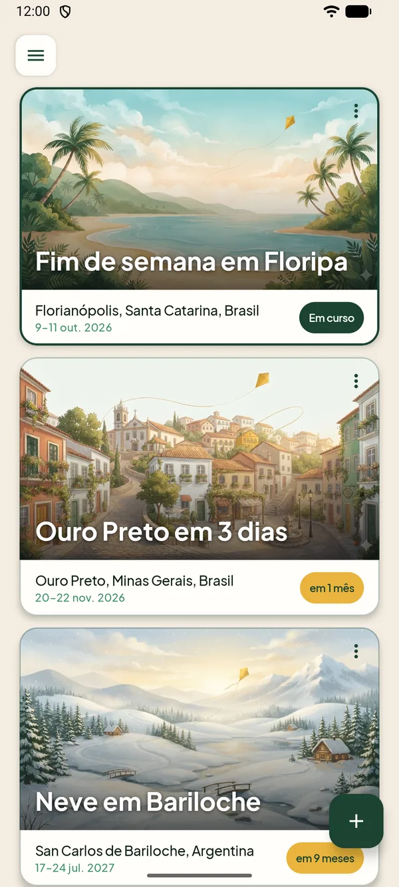
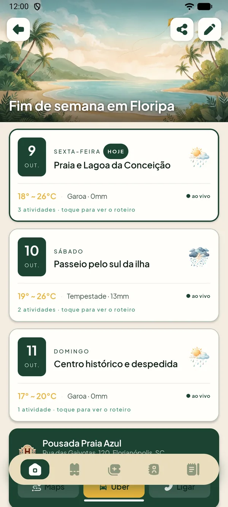
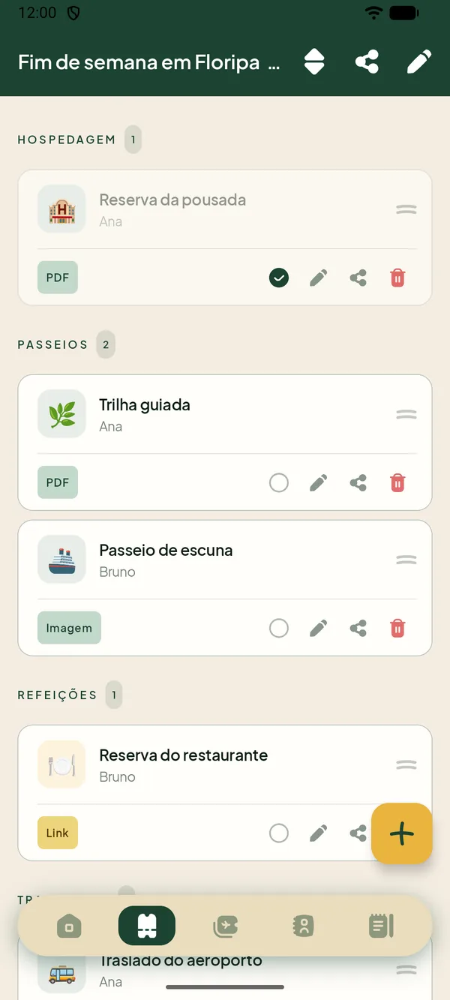
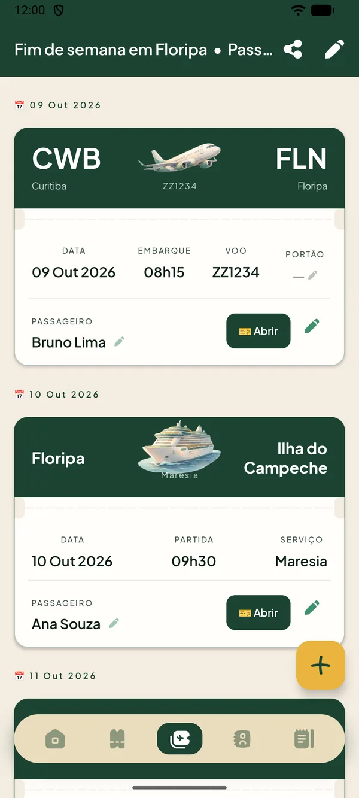

Do primeiro roteiro ao compartilhamento com quem vai junto. Cada passo leva menos de um minuto.
1Criar uma viagem
Na tela Minhas viagens, toque no botão + (ou abra o menu ☰) e escolha Nova viagem. São quatro passos:
Nova viagem: dê um nome (ex.: “Férias de inverno 2026”) e escolha o destino. O app sugere cidades enquanto você digita.
Datas da viagem: informe ida e volta. O Pipa cria um dia para cada data.
Hospedagem: busque o hotel ou o endereço onde vai ficar.
Roteiro com IA: opcional. Veja a próxima seção.
Dica: você pode pular o passo da IA e montar o roteiro manualmente, direto na tela de cada dia.

Minhas viagens
2Montar o roteiro
No último passo da criação você escolhe como quer montar o roteiro. Toque no ícone de ajuda (?) para ver as duas opções dentro do app.
Chat com IA
Ideal se você ainda não tem um plano. A IA já conhece destino, datas e hospedagem. Conte o perfil da viagem (família, casal, amigos…) e o que prefere fazer, e ela monta um roteiro personalizado no app.
Importar roteiro
Ideal se você já tem um roteiro, de um blog, um vídeo ou outra conversa com IA. O app gera um texto de instrução: copie, cole em qualquer IA, e depois cole a resposta de volta no Pipa.
Escolha Chat com IA ou Importar roteiro.
Siga as instruções da tela. Na importação, cole a resposta da IA exatamente como veio, sem editar.
Confira o Roteiro gerado e confirme para salvar os dias e as atividades.
Atenção: no chat, o que você digita é enviado ao Google Gemini para gerar o roteiro. Não escreva dados sensíveis (saúde, documentos, senhas).
3Dias, atividades e clima
Ao abrir a viagem, você vê um cartão por dia, com a data, o título e a previsão do tempo. Toque em um dia para ver o roteiro completo.
Toque em + para adicionar uma atividade com horário, descrição e ícone.
Em cada atividade há atalhos para abrir no Maps, chamar um Uber ou ligar.
A previsão do tempo aparece em cada dia, com ilustração por condição. Use o botão de atualizar para buscar de novo.
Anexe um documento (PDF ou imagem) a um dia e abra-o quando precisar.
O ícone de lápis, no topo, edita a viagem; o de compartilhar envia a viagem a outra pessoa.

Roteiro da viagem
4Vouchers
Na aba Vouchers ficam reservas, ingressos e comprovantes, em PDF, imagem ou link.
Toque em + e escolha a categoria, a pessoa e o dia da viagem.
Anexe o arquivo ou cole o link.
Use o menu da tela para agrupar por categoria, por pessoa ou por dia.
Marque como “Usado” depois de utilizar.
Mantenha o dedo pressionado em um voucher para reordenar.
Crie categorias personalizadas se as padrão não servirem.

Vouchers
5Passagens e embarque
A aba Embarque guarda as passagens de qualquer tipo de transporte: avião, trem, ônibus ou navio.
Toque em + e escolha o tipo de transporte.
Preencha origem, destino e horários, e anexe o arquivo ou o link.
O cartão é exibido no estilo bilhete, com um botão Abrir por passageiro.
Dica: nos voos, o portão de embarque é editável. Confirme no app da companhia ou no painel do terminal no dia do embarque e anote aqui.

Passagens
6Contatos
Reúna hotel, guias, motoristas e outros telefones úteis na aba Contatos, agrupados por categoria.
Toque na estrela para favoritar: os favoritos sobem para o topo.
Toque nos botões para ligar ou abrir o WhatsApp. A chamada só é feita quando você confirma no discador.
Arraste para reordenar e deslize para apagar.
Em Configurações, você pode incluir SAMU (192), Bombeiros (193) e Polícia Militar (190) em todas as viagens.
Contatos
7Notas
A aba Notas guarda anotações da viagem toda. Dentro de cada dia também há um atalho para as notas do dia.
Monte a nota com blocos de texto, checklist e título de seção.
Reordene os blocos arrastando.
Ótimo para a lista de bagagem, restaurantes para testar ou o que não esquecer.
8Compartilhar e importar
O Pipa não precisa de conta: a viagem vai em um arquivo .travel, que leva roteiro, documentos, vouchers, passagens e notas.
Para enviar
Abra a viagem e toque no ícone de compartilhar.
Toque em Compartilhar viagem e aguarde o arquivo ficar pronto.
Envie por WhatsApp, e-mail ou o app que preferir.
Para receber
Toque no arquivo .travel recebido e escolha o Pipa, ou use Importar viagem no app.
Confirme. Uma nova viagem é criada, sem mexer nas suas.
Se você já tiver aquela viagem, o app mostra as duas versões e pergunta se quer substituir.
Cuidado: o arquivo pode conter documentos pessoais anexados (passagens, vouchers). Confira os anexos antes de enviar a alguém.
Dica: o arquivo .travel também serve de cópia de segurança. Como os dados ficam só no aparelho, guarde um antes de trocar de celular.
9Configurações
Abra o menu ☰ na tela Minhas viagens e toque em Configurações.
Idioma: português, inglês, espanhol ou o mesmo do aparelho.
Abrir viagem em curso automaticamente: ao abrir o app, vai direto para a viagem ativa (quando houver só uma).
Números de emergência nos contatos: SAMU, Bombeiros e Polícia Militar em todas as viagens.
Ordenar por proximidade: a viagem em curso e as mais próximas aparecem primeiro.
Ocultar viagens concluídas: elas somem da lista, mas não são apagadas.
Perguntas frequentes
Preciso criar conta ou fazer login?
Não. O Pipa não tem cadastro. Você instala e começa a usar.
O Pipa funciona sem internet?
Sim para o roteiro, vouchers, passagens, contatos e notas, que ficam no aparelho. Precisam de internet apenas a previsão do tempo, a busca de destinos e o assistente de IA.
Onde ficam os meus dados? E se eu trocar de celular?
Ficam no seu aparelho, e não em um servidor do Pipa. Ao desinstalar o app, eles são apagados. Antes de trocar de celular, exporte cada viagem em um arquivo .travel e importe no aparelho novo.
Quais celulares são compatíveis?
Aparelhos Android com a versão 8.0 ou mais recente. Ainda não há versão para iPhone.
Posso usar a IA quantas vezes quiser?
Há um limite diário de conversas com o assistente do app. Se atingir, você ainda pode usar a opção Importar roteiro com qualquer outra IA.
A IA errou um horário ou um lugar. E agora?
Roteiros de IA são sugestões. Confira endereços, horários de funcionamento e preços antes de viajar. Você pode editar qualquer atividade depois de salvar o roteiro.
Como apago uma viagem?
Na lista de viagens, toque no menu ⋮ do cartão e escolha Excluir. A exclusão é permanente e remove também dias, atividades, contatos e vouchers daquela viagem.
O app está com algum problema. Como relato?
Escreva para a gente pela página de contato. Conte o que aconteceu e o modelo do seu celular, que ajuda muito.